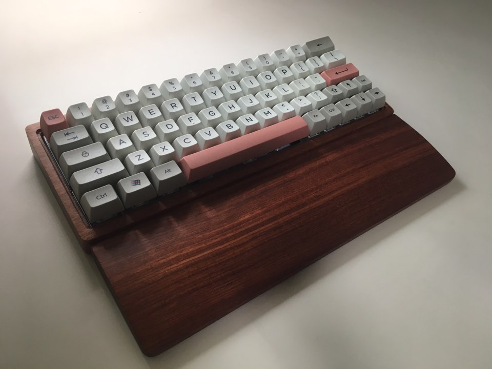
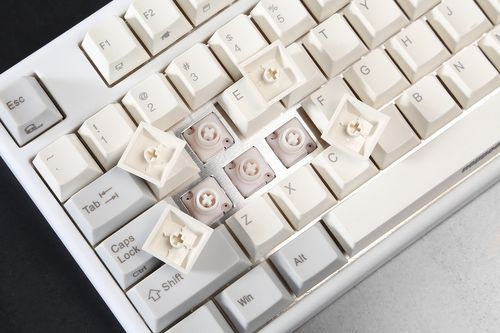
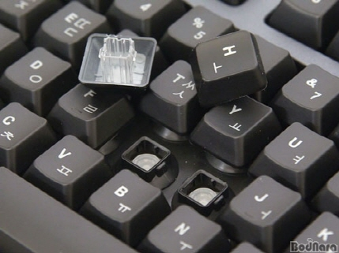

기계식 키보드(Mechanical Keyboard)의 정의는 통일되어 있지 않으나 전통적으로 아래의 조건을 모두 만족하면 기계식 키보드로 분류한다.
기계식 키보드는 여러 회사에서 만든 여러가지 스위치가 사용된다. 이에따라 사람들마다 각자의 취향에 맞는 스위치를 선택해서 조립하는 커스텀 기계식 키보드는 큰 커뮤니티를 형성하고 있다. 다양한 종류의 스위치는 타건감을 좌우하는 스템의 색과 회사이름을 같이 적어서 분류한다. 아래 몇가지 대표적인 스위치들이다.
무접점 키보드(Capacitive Keyboard)는 축전기의 축전량 변화를 측정하여 키가 눌렸는지 감지하는 방식의 키보드이다. 키보드 스위치에 전도체(주로 피라미드 모양의 용수철)가 있는데, 이게 밑에 있는 기판의 축전센서에 신호를 보내는 입력기의 역할을 한다. 대명사격 모델로 토프레사의 리얼포스와 PFU의 해피 해킹 프로패셔널 시리즈가 존재한다. 과거엔 이 두 키보드가 무접점 키보드 시장을 양분하였으나, 2015년 들어 키보드 업체들이 잇달아 무접점 키보드를 선보이며 경쟁이 심화되고 있다.
무접점 키보드 제품은 판매 업체나 고객이나 매니악성이 강한 고급형 키보드로 분류한다. 때문에 품질이 뛰어난 편이며 가격이 비싸다. 어떤 제품이라도 보급형 멤브레인 키보드보다는 확실히 우수하다. 무난한 성능의 보급형 멤브레인 키보드는 1만원 정도면 구할 수 있고 퀄리티가 높은 고급형 멤브레인 키보드도 5만원 내외의 가격이면 구입할 수 있는 데에 비해, 한성 NIZ EC 키보드는 10만원 내외, 리얼포스 키보드는 국내 판매가 기준 36만원 내외라는[1] 고가이다. 기계식 키보드의 키감과 간혹 비교 대상이 되나, 둘은 작동 원리부터 키감까지 전혀 다르고, 애초에 키감이라는 것이 취향의 영역이기 때문에 우열을 가릴 수는 없다. 고무가 주요 부품이라는 점에서 가깝기로는 기계식 키보드보다 멤브레인 키보드에 더 가깝고 키감도 기계식보다는 멤브레인에 더 가깝다. 허나 멤브레인과 달리 키가 바닥을 때리지 않아도 입력이 가능하다는 부분, 개별 스위치가 존재한다는 부분은 기계식에 더 가깝다고도 할 수 있을 것이다.
멤브레인 키보드(Membrane Keyboard). 멤브레인 시트와 러버돔을 사용하는 컴퓨터 키보드의 일종이자 가장 대중적인 방식. 내구성은 약하지만 합리적인 가격을 무기로 키보드 시장의 절대다수를 차지하고 있다. 내구성이 약한 방식으로 분류되기는 하지만, 팬터그래프 키보드보다는 몇 배는 더 튼튼하다. 그리고 내구성이 약하다는 것도 원가절감에 의한 것이지 마음만 먹으면 얼마든지 튼튼하게 만들 수 있다. DT35라는 훌륭한 예시도 있고, 로지텍, 마이크로소프트, 레노버, 델 등 유명 메이커 키보드들도 아주 싼 제품만 아니면 충분히 내구성이 괜찮다. 또한 '오래쓰는' 개념의 내구성이 약한것이지 '내충격성'으로서의 내구력은 키보드 중에서도 최상위권에 속한다. 구조 자체가 단순하기 때문이다. 상판을 대충 금속 하우징으로 강화한 2만원대 멤브레인 키보드가 13톤짜리 버스에게 밟힌뒤에도 전체키의 80% 가량이 작동할 지경이며# 샷건을 가장 잘 버티는것도 멤브레인 키보드이다. 이에 비해자면 팬터그래프나 기계식은 말그대로 신주단지 모시듯 해야한다.
러버돔을 사용했다는 점 때문에 러버돔을 사용한 키보드를 멤브레인 키보드라고 부르는 경우가 많으나, 멤브레인 키보드의 원래 정의는 키 인식에 PCB 기판이 아닌 '멤브레인 시트'를 이용한 키보드다. 즉, 러버돔을 사용했더라도 키 인식에 PCB 기판을 사용할 수 있고, 멤브레인을 사용했더라도 스위치는 기계식 키보드와 유사할 수도 있다. 다만, 멤브레인 시트를 사용한 키보드가 대부분 러버돔을 사용하다보니 용어가 원래 정의와 달라져, 러버돔을 사용한 키보드를 멤브레인 키보드라고 부르는 경우가 많다.
| KBD | 키보드 설명 | |||
|---|---|---|---|---|
| 키보드 종류 | 참고 사이트 | 키보드 사진 | ||
| 키보드 | 1. 기계식 |
|
나무위키 |  |
| 2. 무접점 |
|
나무위키 |  | |
| 3. 멤브레인 |
|
나무위키 |  | |